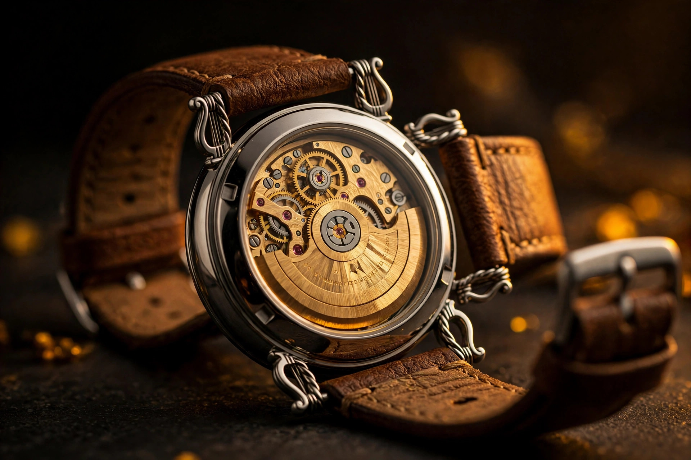

Nina’s Watch, Rebuilt from the Rotor Up: Universal Genève’s Compax and the UG-200

Dead brands do not usually come back; they get bought for the trademark, mined for a heritage reissue or two, and quietly shelved when the anniversary money runs out. Universal Genève spent 35 years in exactly that condition, owned since 1989 by Hong Kong’s Stelux Group, its name kept alive on paper while the innovation stopped. Nobody noticed. Then Breitling bought it in December 2023, and on April 8, 2026, the brand returned with five model lines, three new movements, and a claim it intends to sit above Breitling in luxury positioning.
Comebacks are cheap to announce and expensive to prove. A revived name means nothing without a movement nobody else builds, and the Compax carries the one that matters: the UG-200, a column-wheel chronograph with a vertical clutch, wound by a micro-rotor, a combination almost nobody builds, and there is a reason for that.
Nina Rindt and the Panda Dial
Universal Genève launched the Compax in 1936, the first wrist chronograph with an hour counter, three registers for running seconds, elapsed minutes, and elapsed hours. By the 1960s the line had gone sporting, and one version became famous for a reason that had nothing to do with engineering. Nina Rindt, a Finnish model, wore a white-dial Compax with black subdials on a wide leather strap while standing trackside timing her husband Jochen Rindt’s Grand Prix races. Collectors named the reference after her, and the Nina Rindt became the most recognizable Compax ever made.
Jochen Rindt won the 1970 Formula 1 world championship posthumously, the only driver ever to do so. His wife’s watch outlived them both as an object of desire. Vintage Nina Rindts trade at multiples of ordinary 1960s chronographs, not because the movement inside was special, it was a solid Valjoux-based caliber shared with a dozen other brands, but because the dial is perfect: white field, black registers, thin tachymeter bezel, twisted lyre lugs, with nothing to add and nothing to remove.
New Compax keeps that recipe almost intact. Case diameter 39.5mm, lug-to-lug 47.8mm, thickness 12.45mm, water resistance 100 meters, in steel or 18-karat rose gold. Panda and reverse panda dials in the Prêt-à-porter line, linen-textured lacquer dials in sage green, lavender, and brushed indigo in the seasonal Capsule line. Nina’s Bund strap returns in leather, including an alligator version. Prices run CHF 15,500 for steel on a Bund strap, CHF 17,000 on the bracelet, CHF 18,500 for the steel Capsule, and CHF 38,010 to CHF 39,900 for rose gold, with availability beginning in autumn 2026.
Faithful revival is the easy part, since any brand with an archive can copy a dial. What separates a resurrection from a costume is the movement, and that is where Universal Genève bet its entire return on a piece of its own history almost nobody remembers.
The Microtor, 1955
Universal Genève patented the micro-rotor in 1955. Instead of a semicircular rotor sweeping across the full back of the movement, a small weighted rotor sits recessed inside the caliber itself, spinning in a cutout in the mainplate, and an automatic movement could suddenly be nearly as thin as a manual one. It worked. Universal Genève’s integrated Microtor caliber arrived in 1958 at 4.1mm thick, a thinness record at the time, and the Golden Shadow of 1966 pushed it to 2.5mm, the world’s flattest automatic movement, a record built on the same trick of hiding the rotor inside the caliber rather than stacking it on top, where every other automatic of the era put it.
Thinness was the prize, and a conventional automatic stacks the rotor on top of the gear train, adding roughly 2mm to the movement before the case even enters the calculation. Burying the rotor inside the movement recovers that height, which is why the micro-rotor became the prestige solution for slim dress watches: Patek Philippe’s caliber 240, Audemars Piguet’s 2120, and Piaget’s ultra-thin calibers all descend from the idea Universal Genève patented first.
But a micro-rotor has a weakness that every engineer who has built one knows by heart. Winding torque comes from mass times radius, and a rotor the size of a coin has little of either. A full-size rotor sweeps a large arc with a heavy gold segment at its rim; a micro-rotor spins a small eccentric weight in a confined space. It winds more slowly, and it winds less per wrist movement. For a time-only watch with modest energy demands, that tradeoff is invisible. Add a chronograph, and the math turns hostile.
Why a Micro-Rotor Chronograph Is Hard
A chronograph is a parasite on the gear train. Engaging it couples extra wheels, a column wheel, a vertical clutch, and three totalizer hands to the going train, and every one of those components adds friction. A vertical clutch is the efficient choice, it engages without the jumping seconds hand that a horizontal clutch produces, but it still demands torque to drive the chronograph seconds hand against its own inertia and the friction of the clutch plates. Running the chronograph continuously can cut a movement’s power reserve by a third or more.
Now feed that load with a rotor that weighs a fraction of a normal one. Most manufacturers solve the problem by not attempting it: the Valjoux 7750, the ETA A05, Rolex’s 4131, Omega’s 9900, and nearly every other modern automatic chronograph use a full central rotor, because the winding system needs the mass. Piaget has built a micro-rotor chronograph, the ultra-thin 880P, but as a showpiece with limited production rather than a volume caliber. Universal Genève’s answer is to make the rotor heavier and smarter rather than bigger.
Mass is the lever. Rotor inertia scales with mass and with the square of radius, so when radius is constrained by the movement’s architecture, the only variable left is density, and gold, at 19.3 g/cm³ in its pure form, is more than twice as dense as steel, which is why a gold rotor segment of the same size as a steel one carries more than double the winding energy per swing. That is why the UG-200 uses a gold three-quarter rotor, a 270-degree arc of gold that fills most of the movement’s diameter while leaving a window open to view the caliber beneath.
Three-quarter is a deliberate compromise. A full 360-degree rotor cannot exist in a micro-rotor design, because the rotor must sit beside the gear train rather than above it, and a partial arc is the geometric price of that placement. At 270 degrees, the UG-200’s rotor is about as large as a micro-rotor can be while still clearing the balance, the barrel, and the chronograph works. It spins on a ball bearing, winds in one direction, and its gold mass is the reason a 6.63mm integrated chronograph can claim a 72-hour power reserve at all.
Inside the UG-200
Numbers first. Calibre UG-200: 30mm diameter, 6.63mm thick, 36 jewels, 4 Hz, 72-hour power reserve. Column wheel, vertical clutch, quarter-second chronograph with 30-minute and 12-hour totalizers, small seconds at 6 o’clock. Double-supported balance bridge rather than a single-sided cock, which matters more than it sounds: a bridge anchored at both ends resists shock and positional variation better than a cantilevered cock, and it is the kind of structural choice that shows up in rate stability rather than in marketing copy.
Frequency deserves a note. Four hertz, or 28,800 vibrations per hour, is the modern standard, and it is also the frequency that makes a quarter-second chronograph scale honest, because at 4 Hz the balance completes eight half-oscillations per second, so the chronograph seconds hand advances in eighth-second steps that read cleanly against a scale divided into quarters. A 5 Hz movement would resolve finer, but it would also consume more energy, and energy is exactly what a micro-rotor chronograph cannot waste.
Seventy-two hours is the number that has to carry the argument, because three days of reserve from a barrel fed by a small rotor is a statement about the whole system’s efficiency: a low-friction gear train, a vertical clutch that disengages cleanly when the chronograph is off, and a mainspring sized to store enough energy without demanding more torque than the rotor can supply. Universal Genève does not publish the barrel dimensions or the lift angle, so the claim rests on the specification alone. Owners will test it the only way that counts, by leaving the watch unwound over a long weekend and checking whether it is still running on Monday morning.
One honest caveat belongs here. Universal Genève describes the UG-200 as a manufacture caliber, and the design and technical development are the maison’s own, but physical production is carried out by Breitling Chronométrie in La Chaux-de-Fonds. That is not a scandal, Breitling Chronométrie is a serious manufacture that builds Breitling’s own in-house calibers, and the arrangement is disclosed rather than hidden. It does mean the revival’s most important movement is built by its owner’s factory, which is worth knowing when weighing the claim that Universal Genève sits above Breitling in the luxury hierarchy. Independence, for now, is a design office and a brand, not a factory floor.
Case, Dials, and the Capsule Gamble
Case construction is straightforward and well judged. The case is a 39.5mm steel or rose-gold body with a screw-down caseback, a sapphire exhibition window, a push-pull crown, and 100 meters of water resistance, and that last number on a vintage-styled chronograph with a push-pull crown is a genuine engineering choice rather than a default, because it means the case seals are good enough that the crown does not need to screw down and the watch can be worn without the anxiety that usually attaches to a CHF 15,500 dress chronograph.
Bezel treatment splits the two lines. Prêt-à-porter models use a black ceramic bezel insert with a tachymeter scale, the period-correct choice. Capsule models swap ceramic for transparent sapphire, revealing the metal beneath in a tone matched to the dial. Sapphire bezels are harder to make than ceramic ones, they must be machined and polished from a single crystal without chipping, and the effect is subtler: color that comes from the metal underneath rather than from a printed or coated surface.
Dial work is where the Capsule line either justifies itself or doesn’t. Linen-patterned lacquer in indigo, sage green, and lavender, with white subdials and color-matched leather straps, is a fashion-forward move for a brand whose reputation rests on restrained 1960s design. It will read as either a confident flex of the maison’s old motto, le couturier de la montre, the couturier of the watch, or as a seasonal gimmick that dates the watch to 2026. Both readings are defensible. My own view is that the Capsule dials are the more interesting risk: a revived brand that only reissues its greatest hit is a museum, and the linen lacquer at least attempts something the original never did.
Strap strategy deserves a mention because it is unusually thoughtful. Every Compax ships with an interchangeable system, and the Bund strap, a wide leather cuff that passes under the case, is the direct nod to how Nina Rindt wore hers. Bund straps divide opinion, they add bulk and trap heat against the wrist, but on this watch the reference is the point. Nobody buys a Nina Rindt revival and then complains that it looks like the photographs.
What It Is Not
Limitations, stated plainly. UG-200 is not chronometer certified. At CHF 15,500 for a steel chronograph without COSC or METAS certification, the price buys heritage, design, and an unusual movement architecture, not independently verified rate performance. Omega’s Speedmaster ’57, an automatic column-wheel chronograph with Master Chronometer certification, costs less in steel. That comparison is unfair in one direction and entirely fair in another: unfair because the Compax is a limited-production revival from a brand rebuilding its manufacture, fair because a buyer spending fifteen thousand francs on a chronograph is entitled to ask what the money measures.
Production volume is the second open question. Universal Genève has not published production targets for the Compax, and the Capsule line is described as limited seasonal editions without stated numbers. Scarcity by design is a legitimate strategy for a luxury brand, but scarcity by manufacturing constraint is a different thing, and the market will learn which one it is from delivery times. Autumn 2026 availability was the plan at launch; whether dealers actually have watches in cases is the test that matters now.
And the movement, for all its ingenuity, is a first generation. A micro-rotor chronograph that has never been produced at scale has failure modes that only volume reveals: rotor bearing wear under the extra load, clutch lubrication intervals, amplitude drop when the chronograph runs for hours. Breitling Chronométrie’s production experience mitigates that risk, but it does not eliminate it. Early buyers are, to a degree, beta testers. That is the price of being first.
The Real Test
Revived brands face a test that has nothing to do with launch coverage. Anyone can stage a comeback. Surviving the second year, when the launch watches are in stores, the press has moved on, and the manufacture has to build the next movement while servicing the first, is the actual challenge. Universal Genève’s answer to that test is a three-movement platform: the UG-110 micro-rotor automatic in the Polerouter, the UG-200 chronograph in the Compax, and the hand-wound UG-111 in the reversible Cabriolet. A platform, not a single watch, is what separates a brand from a reissue program.
Whether the UG-200 earns its place in that platform depends on the one number nobody can verify from a press release: winding efficiency in real wear. A gold three-quarter rotor is a sound engineering answer to a hard physics problem, and 72 hours is a credible claim for the architecture. But a micro-rotor chronograph lives or dies on whether a desk worker’s wrist, not a test bench’s winder, keeps it charged. This assessment rests on published specifications and the brand’s history; I have not handled the new Compax, and the winding question can only be settled by owners. If it does, Universal Genève has revived not just a name but the specific technical idea the name stood for: a thinner automatic, achieved by hiding the rotor inside the movement, now applied to the complication that makes hiding it hardest. If it doesn’t, the Compax is a beautiful panda dial wrapped around a compromise, and the market will notice within a year.
Nina Rindt’s original Compax timed Grand Prix races from a pit wall. Her husband’s car did the fast work; her watch did the measuring. Seventy years later the new Compax measures something else: whether a brand that was dead for a generation can engineer its way back to relevance instead of merely dressing up its archive. A gold rotor the size of a coin, spinning inside a 6.63mm chronograph, is a serious attempt at an answer.
Sources
- Hodinkee, “Introducing: The Iconic Universal Genève Compax Returns, With The ‘Nina Rindt’ And Five Other Versions,” April 8, 2026.
- Time+Tide Watches, “Universal Geneve Compax | INTRODUCING,” April 8, 2026.
- Gear Patrol, “The World’s Greatest Lost Watch Brand Is Officially Back, and So Are Its Icons,” April 8, 2026.
- Revolution Watch, “A Closer Look: Universal Genève Compax Collection,” July 21, 2026.
- Swisswatches Magazine, “Universal Genève Compax: Return of the Nina,” April 8, 2026.
- WorldTempus, “Breitling Acquires Universal Genève, Announcing The Revival Of The Swiss Watchmaking Icon,” December 13, 2023.
- Setback in Time, “The Universal Genève watch company,” brand history.
- The Hour Markers, “Universal Geneve Returns New Era for Iconic Watches 2026,” April 8, 2026.